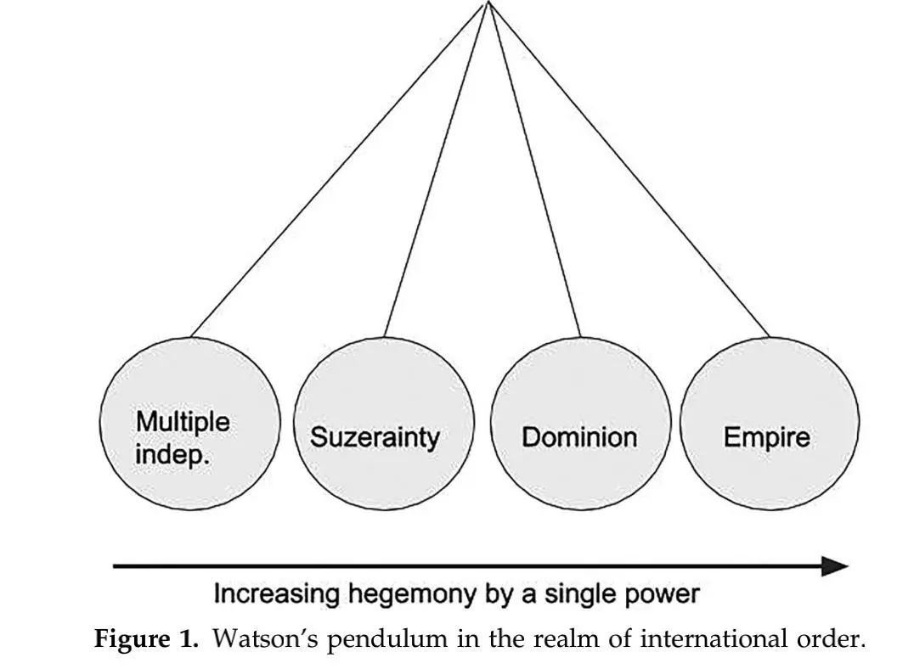
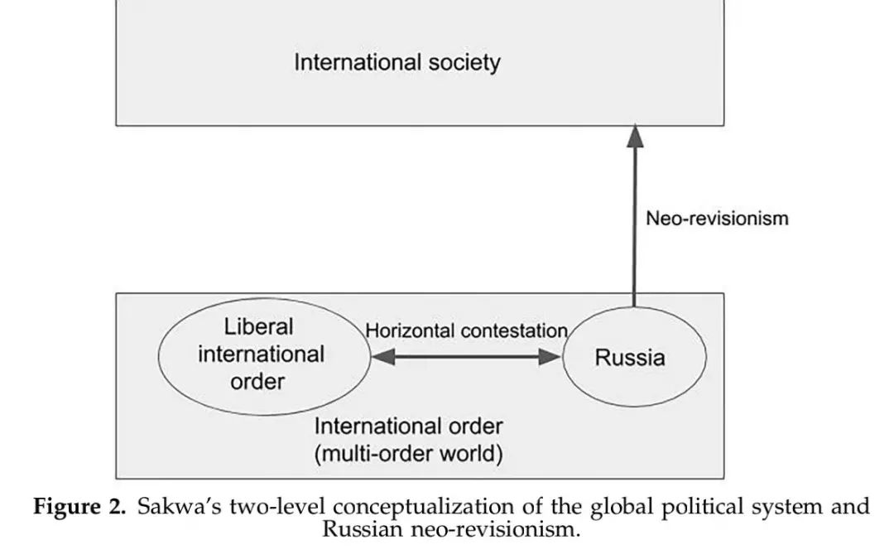
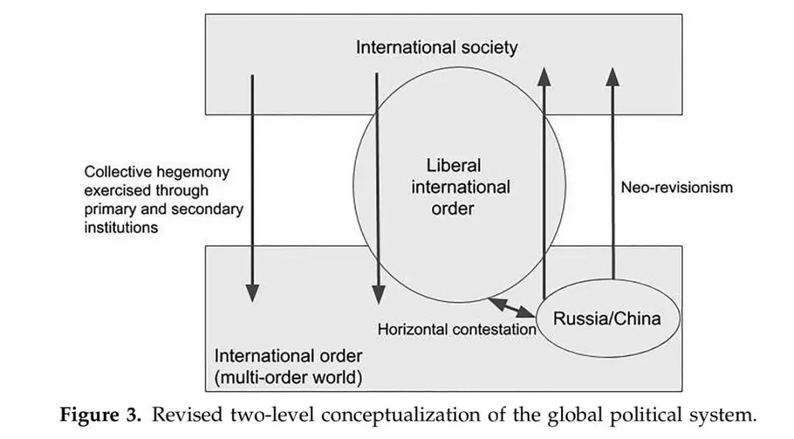
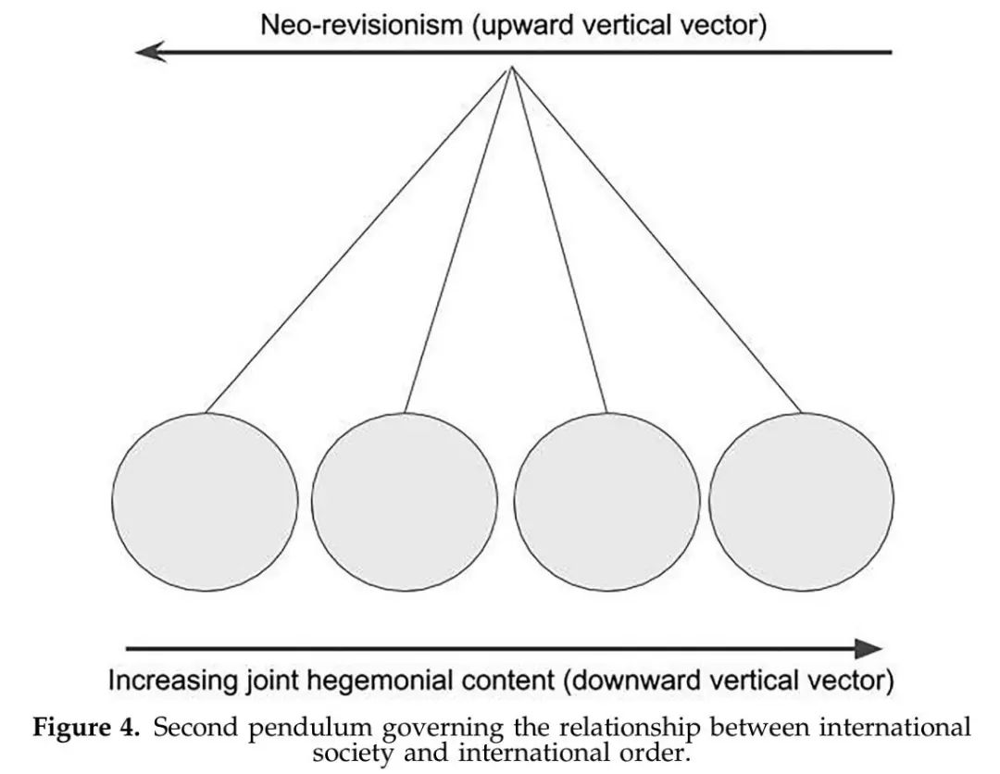
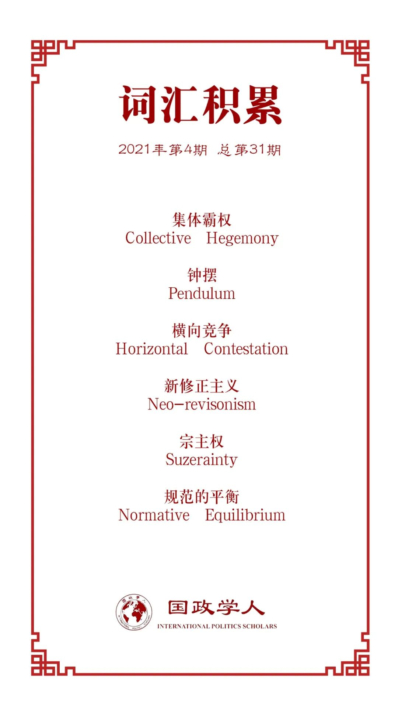

收录于合集 #理论研究 96个

作品简介
【作者】 Zachary Paikin，英国肯特大学国际历史与国际关系学的助理讲师，21世纪问题研究所网络项目负责人，研究兴趣为俄罗斯外交的历史与发展进程、俄罗斯的多边外交。
【编译】 尤力（国政学人编译员，上海外国语大学国际关系与公共事务学院）
【校对】 阮镇炜，池佳曈
【审核】 丁伟航
【排版】 韩心蕊
【美编 】臧泽华
【来源】 Zachary Paikin (2021). Great power rivalry and the weakening of collective hegemony: revisiting the relationship between international society and international order, Cambridge Review of International Affairs , 34:1, 22-45.
【归档】 《国际关系前沿》2021年第4期，总第31期。
期刊简介
《剑桥国际事务评论》（Cambridge Review of International Affairs）于1985年创立，是国际关系同行评审学术期刊，以季刊形式发行。由剑桥大学国际研究中心（现隶属牛津大学政治与国际关系学院）编辑，Routledge出版。据2018Journal Citation Reports显示，影响因子为0.656。
大国竞争和集体霸权弱化：
国际社会与国际秩序关系再探
Great power rivalry and the weakening of collective hegemony:
revisiting the relationship
between international society and international order
Zachary Paikin
内容提要
随着俄罗斯与西方的关系跌至冷战后的低点，以及西方对中国的态度变得更加强硬，大国间的竞争似乎又回来了。人们通常认为，这些发展将对所谓“自由主义国际秩序”的持久性产生重要影响。在这样的背景下，本文的研究目的有如下两个：阐明自由主义国际秩序是什么；探究自由主义国际秩序与英国学派对国际社会与国际秩序的理解有怎样的联系。为了达到上述研究目的，首先，本文将对上述概念进行分析，为理解当今世界的霸权和自由主义秩序提供一个更广泛的框架；其次，本文将转向解读俄罗斯和中国对自由主义秩序的看法，以及它们在多大程度上挑战这种秩序；最后，本文将讨论这些问题对国际社会和国际秩序之间的概念关系的影响。
文章导读
01
背景
随着苏联解体和中国的迅速崛起，国际体系日益多极化的观点逐渐流行起来。新现实主义者认为，这些国家将会成为联合起来抵制霸权国的压倒性力量。从2014年俄罗斯与西方对抗加剧到2016年英国脱欧、特朗普当选美国总统，种种迹象似乎都在表明美国所倡导的“自由主义国际秩序”正在面临挑战。但是这种挑战并没有造成全球物质力量结构的根本改变，而是打破了过去国际体系中的影响力均势（the balance of influence），即规范的平衡（the normative equilibrium），具体表现为：美国的规范影响力的下降，中国和俄罗斯的规范趋同，欧洲被相互对立的规范所分割。总之，“自由国际秩序”已经达到了其扩张的地理极限。
02
概念的重新审视
（1）沃森的钟摆模型
在研究国际社会范畴内的霸权扩张问题时，我们自然会想到国际关系英国学派的代表学者亚当·沃森（Adam Watson）以及他的钟摆模型。该模型用于描述国际秩序中存在的集权程度——即霸权国在某一特定时刻所拥有的实力和影响力的相对数量。这种霸权权威不仅涉及物质优势，也涉及文明标准。换句话说，它既衡量物质实力，也衡量规范性的影响力。钟摆在最左边高度分散的社会和最右边高度集中的社会之间摆动，从左至右依次经历“多个独立国家”（multiple independencies）、宗主权（suzerainty）、自治领（dominion）和帝国（empire）。

图一
基于上述模型，无论是美国主导的全球秩序还是以布鲁塞尔为核心的欧洲地区秩序，在冷战结束后都出现了相对迅速的右摆。而西方大国所倡导的规范遭到了俄罗斯和中国等国的抵制，而这被视为钟摆自然地向左摆。
但是上述模型存在显著缺陷。一方面，该模型仅仅只能衡量霸权的程度，而无法衡量霸权的演变特征和内容；另一方面，由于该模型很难兼顾行为和正当性，任何给定的国际秩序都可能处在钟摆的两端。所以，该模型或许可以解释俄罗斯为何会远离后冷战时期的欧洲- 大西洋安全秩序，但是它未必能提供关于“自由国际秩序”这一概念的全部图景，该概念的内涵和外延仍然存在巨大争议。
（2）国际社会和国际秩序
自冷战开始以来，国际社会和国际秩序没有保持同样的地理范围，在美苏长达四十年的对峙中，全球国际社会很大程度上受到两种相互对立的国际秩序的支配。弗洛克哈特（Trine Flockhart）指出：我们今天正在目睹一个“多秩序世界”的出现，其特征是多个(可能重叠的)区域和跨区域的国际秩序，每种秩序都充满了自身对权力、身份、首要(非正式)制度和次要(正式)制度的理解。
基于弗洛克哈特的多秩序世界模型，萨克瓦（Richard Sakwa）进一步阐述了全球政治体系的双层构想，区分了国际社会和国际秩序。顶层是全球国际社会本身，包括其所有的正式制度和非正式的惯例，而底层是国际秩序间相互竞争、偶尔重叠的多秩序世界的领域。在这个底层领域内，国家和次秩序（sub- orders）在“国际关系领域”中水平地相互作用，在“规范领域”中垂直地与国际社会相互作用。在两个层次的互动中，如果大国之间的竞争逐渐失控，那么对规范的不同解释及应用可能会导致行为和正当性间的差距继续扩大，使国际社会的制度空心化，并使其日益无法生存。

图二
在上述概念下，萨克瓦将“自由主义国际秩序”定义为位于这一底层的多个秩序之一。然而，该定义把自由主义国际秩序与美国领导的地缘政治集团混为一谈，从而低估了该秩序中被俄罗斯和中国接受的要素。此外，作者认为，不能把自由国际主义简单归结为当代的大西洋联盟及其附属物。应当认识到当前的自由主义国际秩序除了具有扎根于美国的显著特征外，其概念要“厚重”得多，还包含了促进民主和人权的承诺等附加内容。因此，从“中心- 外围”的角度看自由主义国际秩序或许更加有用：它既包含核心又包含外围，西方国家处于中心，而其他国家偶尔会选择加入该秩序中的某些组成部分。换句话说，这个秩序并不是单独存在于萨克瓦全球政治体系模型中的底层，而是处于多秩序世界和国际社会之间，并与二者相交（见下文图3）。
03
俄罗斯、中国和自由秩序
俄罗斯对自由秩序的看法是复杂的。随着莫斯科的“东方转向”（‘pivot to the east’）、中俄战略伙伴关系的不断深化和“大欧亚大陆”（‘Greater Eurasia’）愿景的推动，俄罗斯与西方出现了一定程度上的矛盾。但是，这种矛盾更多是“实践”上的，而非“原则”上的，作为“规范的执行者”而非“规范的制定者”的俄罗斯，并不会因此而挑战欧洲以及现存秩序的正当性。
同样，中国对自由主义秩序的看法也是模棱两可的。一方面，有人指出，中国对自由贸易、多边制度和应对气候变化上的坚持，似乎表明它在捍卫自由主义秩序；另一方面，中国的对外开放及其与国际社会的接触已经产生了一种共构关系（co- constitutive relationship），扩大了国家内部规范话语的范围。实际上，中国已经适应了某种意义上的政治现状，即使中国还没有完全融入自由主义秩序的规范和制度，它也认同自由主义秩序中的部分要素。
总之，俄罗斯和中国对自由主义秩序的认同更多表现在对多边主义而非多极化的支持。但无论是由于它们的物质实力、辽阔的疆域，还是文化差异，中俄是否会接受在美国领导的世界秩序中永远处于从属地位，一直是一个值得怀疑的问题。
04
迈向全球政治的新构想
为了完善全球政治的双层构想，本文修正了萨克瓦提出的模型，即引入三个描绘大国互动关系以及行为的向量。第一，表示多秩序世界竞争的 水平向量 ；第二，表示大国个体（独自或以集体形式）捍卫国际社会自主权这一 垂直上行向量 ；第三，表示在国际社会的制度和实践中，大国间通过合作，对多秩序世界实施集体霸权这一 垂直下行向量 （见图3）。简单来说，大国关系是竞争和合作的混合物。

图三
而为了更好地理解国际社会与国际秩序的关系，本文修改了沃森的钟摆模型，即引入国际社会与国际秩序的第二个钟摆。垂直下行向量是集体霸权行使的机制，在不受到其他阻力时，将对第二个钟摆施加一个向右的推力。但随着国际秩序在一个日益全球化、民主化和多元文化的国际政治体系环境下逐渐过渡到多秩序世界，在这个多秩序世界内的个别秩序和行为体会开始捍卫国际社会自主权。这作为一个垂直上行向量，会对第二个钟摆施加反作用力，从而削弱集体霸权。如果持续运行的下行向量代表第二个钟摆的右摆，而上行向量将其推向左边，那么二者的同时作用，可能会使钟摆的运动停止，表明一些国家可能偶尔希望摆脱霸权，同时又在很大程度上希望保留霸权体系。

图四
05
结论
对于全球政治而言，随着垂直上行向量的加强，大国间合作的可能性逐渐降低。为了改变这一现状，霸权国需要巩固垂直下行向量的基础。因为自由秩序跨越了社会和秩序两个层面，所以下行向量既通过自由秩序发挥作用，也在它之外发挥作用，其发挥作用的各种不同情况可以被认为是国际社会稳定性的支柱。国际社会的稳定性依赖于一个牢固的基础，即国际秩序，以及依赖于稳定的支柱，而支柱的稳定性则依赖于主要大国之间某种程度的规范一致（normative agreement）。
但在多秩序世界中，对集体霸权的持续性挑战以及不受限制的竞争关系可能会加剧规范竞争（normative contestation）。所以为了稳定多秩序世界中集团的关系和加强国际社会的支柱，本文提出的方案如下：
第一， 发展不同秩序之间正式和非正式的联系 ，方式包括但不限于新的贸易协定、制度、交换和论坛。第二， 使自由主义秩序更加灵活 。一方面在西方的领导力和规范的“推广”（norm projection）之间找到平衡，另一方面在处理与非西方大国关系时遵循实用主义。此外， 当涉及到集体霸权在自由秩序之外向下行使时，需要就基于规则的多边主义的性质和未来达成更大的共识 。
译者评述
在传统观念里，国际秩序被视为一种维护国际社会基本目标的活动，其范围伴随着国际社会的扩张而扩张。但是在当代我们可以观察到，随着集体霸权的衰落和大国对抗的加剧，以美国为首的西方国家所倡导的“自由国际秩序”正在遭受其他大国的挑战。而国际社会中存在的这种现实使得学者们开始重新审视国际秩序的集权程度及其与国际社会的关系。
关于前者，沃森的“钟摆”模型曾经被用来解释国际社会中的霸权扩张问题，但是作者发现该模型仅仅只能衡量霸权的程度，而无法衡量霸权的演变特征和内容。同时，该模型很难兼顾国际社会主体的行为和合法性。
关于后者，作者在佛洛哈特的“多秩序世界”模型和萨克瓦两层构想的基础上，结合沃森的“钟摆”模型，为了我们描绘了国际关系当前历史条件下的大图景：一方面，俄罗斯和中国在西方越权的问题上与西方存在分歧，这促使它们捍卫国际社会的自治权，大国的集体霸权遭到削弱。另一方面，莫斯科和北京对国际社会的承诺及其对自由秩序的部分认同，表明这种挑战的本质是一种温和的“新修正主义”，而不是完全意义上的“修正主义”。
在这里，作者借助模型探究了俄罗斯和中国对于自由秩序的看法以及它们在何种程度上会挑战这种秩序。同时，俄罗斯和中国与自由秩序的互动关系作为实际案例也是对该模型的一种检验。
最后，作者主要站在霸权国的立场上，提出了稳定多秩序世界中集团关系的方案。这让译者联想到了金德尔伯格的“霸权稳定论”，即“有霸则稳”，由霸权国提供公益，创立国际规则。但是，当前国际社会中的各行为体并非是孤立的，而是处在复合相互依赖的状态；国际秩序的创设也不再只以霸权国为主导，更多的时候是在行为体互动的过程中自发生成的。因此译者认为，除了从霸权国（守成国）的视角出发，还可以引入崛起国、非国家行为体、政治共同体等多方视角，进一步探讨稳定全球政治体系的方案。
词汇整理

文章观点不代表本平台观点，本平台评译分享的文章均出于专业学习之用, 不以任何盈利为目的，内容主要呈现对原文的介绍，原文内容请通过各高校购买的数据库自行下载。
好好学习，天天“在看”
国政学人
支持学术公益与知识传播
微信扫一扫赞赏作者 __赞赏
已喜欢，对作者说句悄悄话
取消 __
发送给作者
发送
最多40字，当前共字
上一页 1/3 下一页
长按二维码向我转账
支持学术公益与知识传播
受苹果公司新规定影响，微信 iOS 版的赞赏功能被关闭，可通过二维码转账支持公众号。